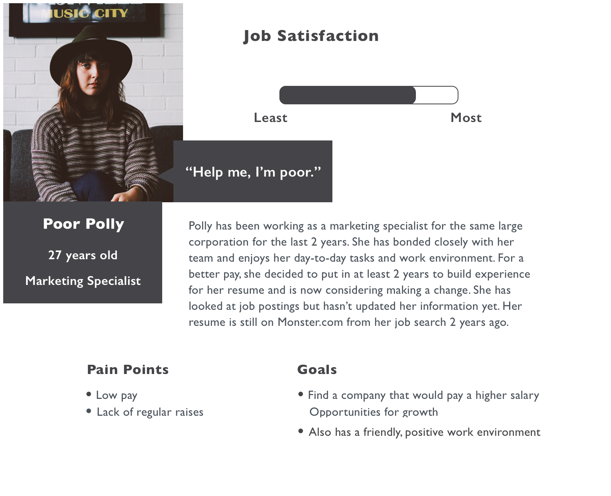

"The prototypes were beautiful. I wish we had that working in our live product right now.Teg Grenager, CEO of Uncommon
Project Overview
TEAM
SPRINT
MY ROLE
PLATFORM
Everything starts here |
In the begining, when looking at Uncommon’s brief, we couldn’t figure out what was their pain points until we had our first client meeting with the CEO and product manager. The more we talked, the more we realized that their product is about to change the recruiting and hiring industry with their AI technology, However, in Uncommon’s database, there are lots of passive job seekers, and those people usually have a low rate of replying emails and take actions. Uncommon came to us hoping that we can investigate and design solutions to help to grow this market. In the meantime, to instigate a way to reduce recruiter’s workload and be more efficient to find good matches. Hence, how to make a product more meaningful and efficient to both recruiters and job seekers?
|
|
Our task |
To engage qualified passive job seekers through Uncommon’s recruiter portal. |
Design process model

Research & discover

Competitive analysis

From the comparison, we found out that there are similar sourcing platforms existing for recruiters, but there is no focus on the job seeker side, especially for passive job seekers.
We highlited some features that may potentialy help us design for passive job seekers.
User survey & interviews As there is no such product existing, we designed survey and conducted interviews to recruiters and job seekers in the U.S. to learn about their needs.
Recruiter Interviews We got introduced to recruiters through Uncommon and friends. We also interviewed 3 recruiters who were in the same building with us.
- 9 recruiters
- Some questions we asked
- Where do you look for talents?
- What is your interview process?
- What reasons do they give when not interested?
Main Findings
- Most used recruiting source: LinkedIn
- Respond with interest: 2-4% ONLY
- Strongest reason for lack of interest:
- Happy with current job
- Timing (waiting for promotion)
- Not interested in company
Job Seeker Survey We designed a survey on google and there are 19 responses. Most people are somewhat happy with their job, but not fully with varied reasons and they are open to opportunities that may be better than what they have now.

Passive Job Seeker Interviews After the survey, we conducted 9 interviews to seek deeper insights based on the survey answers and beyond.
- Some questions we asked
- Do you ever hear from recruiters?
- When you get recruiter emails now, what do you do?
- What is your impression of the emails?
- Is there any way that an email from a recruiter could get your interest?
- What are you unhappy with at your job?
- When is the last time you posted a resume online?
- People were saying
- “At least I know the challenges of my current job.”
- “I delete recruiter emails and don’t read them cause they are unsolicited.”
- “I want to work in a positive work environment. Devoid of negativity and negative people. And that starts with management.”
Sythesizing Data & Affinity Mapping

Main Findings
- Most important factors to consider
- Work environment
- Compensation
- The work itself
Main Findings
- Reasons for not exploring other opportunities
- Comfortable at work, even if unhappy
- Email looks like spam
- Lack of time
Main Findings
- Ways for recruiter to engage passive job seekers through email
- Disclosing where they got the candidate’s information
- If it is an actual person contacting them
- Personalized content
- Not “spammy”
- Gives information about job opportunity
Insight & Define

Problem & Solution
Problem
Passive job seekers often ignore recruiter emails because they are impersonal, vague and require too much time and effort.In order to motivate passive job seekers to explore and pursue new job opportunities, Uncommon needs to offer an experience that is personalized and user-friendly.
Solution
Create a customized experience for passive job seekers that inspires them to explore new job opportunities with Uncommon.We achieve this by providing a simple and personalized applicant process that enables the user to quickly scan company details, qualify for the position, and schedule a time to discuss next steps, all in a matter of minutes.
Solution Design Features
- Personalized & engaging email
- Job description
- Team information
- Benefits
- Brief screener survey
- Appointment booking facility
- Other relevant job postings
Personas Based on the people we surveyed and interviewed, and also some insights from Uncommon and market research , we created three personas: primary, seconday and special one.
Primary

Secondary
Special

Journey Map We use our primary persona, Dan, to creat a journey map to portray how he would interact with this product under his situation.

Design Principles
Tone
One of the key to motivate passive job seeker is the tone in the messages and through the product interface. People like caring, warm and human feeling messages. They want to feel trusted, feel like the recruiter really takes time to draft the email and the new company is really welcoming.
Content
Another important motivator to passive job seeker is the information povided: first in the email, and then through the application process. We will use progressive disclosure strategy to avoid information overload at a specific time. Also, the content needs to be personalized as much as possible.
Color
Uncommon already has a detailed style guide, I chose purple, blue and yellow to be the main color of the new product. Purple means trust, responsibility; yellow is the Uncommon's logo color, blue is its main tabs color.
Ideation & develop
Design Studio Doing a quick design studio among team members is the best practice to conceiving ideas for new product.
A/B Testing We conducted 3 rounds of A/B tesings to come to the final design solution.
User Flow

Email design
Subject Testing
We did another design studio to come up with different email subjects to see which one people is more likely to open, also, which one would display fully on a mobile screen. We sent out all the subjects to 4 people’s emails.

Content iterations
After choosing the right subject line, we continued our journey to email content design and iterations.
Design & Deliver

Wireframes & Hi-Fi Design I designed 6 initial conceptual wireframes for the major sections, including: job/team/benefits information, screener questions, results confirmation page; then, I developped them into full visual compositions following our design principles.


Usability testing & iterations We asked 4 people to do usability testings on the full comp design. We tracked their feedback and consolidated it into interations.
- Sometimes users don’t see the button when they scroll the page.
- The names/tab on the header would confuse users about where they are.
- The radio button may be hard to click on a phone.
- The progress bar indiates which question users were on, but the way to show it is a bit not clear.

- The traditional calendar is hard to read and tap on the phone.

- The options under “No,not yet” section are complicated for user to choose. They might just leave the page. Need to simplify the choices to reduce their load of effort.

- Recruiters already have users contact info since they have their emails, and put phone number input section here may increase users’ clicks.